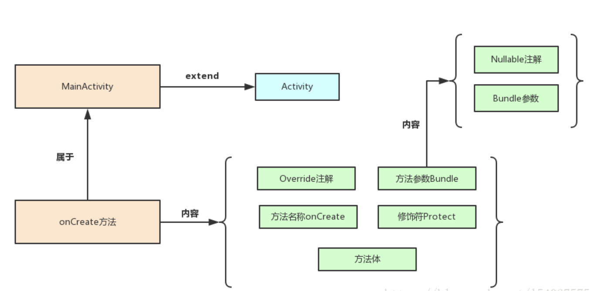

ButterKnife 8.4.0 源码分析（四） .java文件生成 生成.java文件你可以用字符串拼接的笨方法，但是我们的jake大神怎么可能那么弱。人家自己又写了一个库。javapoet ，66666
1 compile 'com.squareup:javapoet:1.7.0'
这里简单的介绍下javapoet
JavaPoet的基本介绍 （1）JavaPoet是一款可以自动生成Java文件的第三方依赖
JavaPoet的小试牛刀 为了展示JavaPoet的能力，这里以自动生成一个全新的MainActivity为例。
1 2 3 4 5 6 7 8 public class MainActivity extends Activity @Override protected void onCreate (@Nullable Bundle savedInstanceState) super .onCreate(savedInstanceState); setContentView(R.layout.activity_main); } }
我在使用JavaPoet的时候，习惯从外向内逐一生成，但是这不是标准,这里可以按照自己的方式来理解和生成.
1 2 3 4 5 6 7 8 9 10 11 12 13 14 15 16 17 18 19 20 21 22 23 24 25 26 27 28 29 30 31 32 33 34 35 36 public static void main (String[] args) ClassName activity = ClassName.get("android.app" , "Activity" ); TypeSpec.Builder mainActivityBuilder = TypeSpec.classBuilder("MainActivity" ) .addModifiers(Modifier.PUBLIC) .superclass(activity); ClassName override = ClassName.get("java.lang" , "Override" ); ClassName bundle = ClassName.get("android.os" , "Bundle" ); ClassName nullable = ClassName.get("android.support.annotation" , "Nullable" ); ParameterSpec savedInstanceState = ParameterSpec.builder(bundle, "savedInstanceState" ) .addAnnotation(nullable) .build(); MethodSpec onCreate = MethodSpec.methodBuilder("onCreate" ) .addAnnotation(override) .addModifiers(Modifier.PROTECTED) .addParameter(savedInstanceState) .addStatement("super.onCreate(savedInstanceState)" ) .addStatement("setContentView(R.layout.activity_main)" ) .build(); TypeSpec mainActivity = mainActivityBuilder.addMethod(onCreate) .build(); JavaFile file = JavaFile.builder("com.test" , mainActivity).build(); try { file.writeTo(System.out); } catch (IOException e) { e.printStackTrace(); }

代码以及图通俗易懂，这里就不过多解释。
javapoet在ButterKnife中的使用 在 process()方法中
1 2 3 4 5 6 7 8 9 10 11 12 13 14 15 16 17 18 @Override public boolean process (Set<? extends TypeElement> elements, RoundEnvironment env) Map<TypeElement, BindingClass> targetClassMap = findAndParseTargets(env); for (Map.Entry<TypeElement, BindingClass> entry : targetClassMap.entrySet()) { TypeElement typeElement = entry.getKey(); BindingClass bindingClass = entry.getValue(); JavaFile javaFile = bindingClass.brewJava(); try { javaFile.writeTo(filer); } catch (IOException e) { error(typeElement, "Unable to write binding for type %s: %s" , typeElement, e.getMessage()); } } return true ; }
遍历targetClassMap集合，调用每一个类的brewJava()方法，最后返回JavaFile对象，再通过writeTo方法生成java文件。
1 2 3 4 5 6 7 8 9 10 11 12 JavaFile brewJava () { return JavaFile.builder(bindingClassName.packageName(), createBindingClass()) .addFileComment("Generated code from Butter Knife. Do not modify!" ) .build(); }
主要步骤
生成类名
生成构造函数
生成unbind方法。
1 2 3 4 5 6 7 8 9 10 11 12 13 14 15 16 17 18 19 20 21 22 23 24 25 26 27 28 29 30 31 32 33 34 35 36 37 38 39 40 41 42 43 44 45 46 47 48 49 50 51 52 53 54 55 56 57 private TypeSpec createBindingClass () 1. 生成类名 xxx也就是使用butterknife的类名 TypeSpec.Builder result = TypeSpec.classBuilder(bindingClassName.simpleName()) .addModifiers(PUBLIC); TypeName targetType; if (isFinal) { result.addModifiers(FINAL); targetType = targetTypeName; } else { targetType = TypeVariableName.get("T" ); result.addTypeVariable(TypeVariableName.get("T" , targetTypeName)); } if (hasParentBinding()) { result.superclass(ParameterizedTypeName.get(getParentBinding(), targetType)); } else { result.addSuperinterface(UNBINDER); result.addField(targetType, "target" , isFinal ? PRIVATE : PROTECTED); } ／／比如在activity public class SimpleActivity_ViewBinding <T extends SimpleActivity > implements Unbinder protected T target; ｝ public final class SimpleAdapter $ViewHolder_ViewBinding implements Unbinder private SimpleAdapter.ViewHolder target; ｝ 2. 生成构造函数 if (!bindNeedsView()) { result.addMethod(createBindingViewDelegateConstructor(targetType)); } result.addMethod(createBindingConstructor(targetType)); 3. 生成unbind方法。 if (hasViewBindings() || !hasParentBinding()) { result.addMethod(createBindingUnbindMethod(result, targetType)); } return result.build(); }
（一）生成类名 代码里注释的比较详细了
（二）生成构造函数 主要是createBindingConstructor 方法，主要是对成员变量赋值，以及设置监听事件。先看下javapoet提供的几个方法或类:
1.MethodSpec：生成方法的辅助类 这里主要是生成构造函数，当然也可以生成其它的普通方法，构造函数也是方法的一种吗。
1 2 3 4 MethodSpec.Builder constructor = MethodSpec.constructorBuilder() .addAnnotation(UI_THREAD) .addModifiers(PUBLIC);
通过如下方法添加参数targetType为参数类型，”target”为参数的变量名
1 constructor.addParameter(targetType, "target" );
通过如下方法添加代码语句
1 constructor.addStatement("this.target = target" );
2.构造函数中变量的赋值 这里主要是对使用了如下的代码进行一个赋值操作。
1 2 @BindView(R2.id.title) TextView title;
这里我们主要看一下关键方法，因为都是类似的拼接代码字符串。
1 2 3 4 5 6 7 8 9 10 11 12 13 14 15 16 17 18 19 20 21 22 23 24 25 26 27 28 29 30 31 32 33 34 35 36 37 38 39 40 private void addViewBindings (MethodSpec.Builder result, ViewBindings bindings) if (bindings.isSingleFieldBinding()) { FieldViewBinding fieldBinding = bindings.getFieldBinding(); CodeBlock.Builder builder = CodeBlock.builder() .add("target.$L = " , fieldBinding.getName()); boolean requiresCast = requiresCast(fieldBinding.getType()); if (!requiresCast && !fieldBinding.isRequired()) { builder.add("source.findViewById($L)" , bindings.getId().code); } else { builder.add("$T.find" , UTILS); builder.add(fieldBinding.isRequired() ? "RequiredView" : "OptionalView" ); if (requiresCast) { builder.add("AsType" ); } builder.add("(source, $L" , bindings.getId().code); if (fieldBinding.isRequired() || requiresCast) { builder.add(", $S" , asHumanDescription(singletonList(fieldBinding))); } if (requiresCast) { builder.add(", $T.class" , fieldBinding.getRawType()); } builder.add(")" ); } result.addStatement("$L" , builder.build()); return ; } List<ViewBinding> requiredViewBindings = bindings.getRequiredBindings(); if (requiredViewBindings.isEmpty()) { result.addStatement("view = source.findViewById($L)" , bindings.getId().code); } else if (!bindings.isBoundToRoot()) { result.addStatement("view = $T.findRequiredView(source, $L, $S)" , UTILS, bindings.getId().code, asHumanDescription(requiredViewBindings)); } addFieldBindings(result, bindings); addMethodBindings(result, bindings); }
主要是调用系统的findViewById 方法，但是你看到了findRequiredViewAsType,findRequiredView方法和castView方法，findRequiredView,findRequiredViewAsType是作者为乐代码的书写方便对findViewById的一层封装，你可以看一下源码,最后都会调用的findRequiredView方法的findViewById方法。
1 2 3 4 5 6 7 8 9 10 11 12 13 14 15 public static View findRequiredView (View source, @IdRes int id, String who) View view = source.findViewById(id); if (view != null ) { return view; } String name = getResourceEntryName(source, id); throw new IllegalStateException("Required view '" + name + "' with ID " + id + " for " + who + " was not found. If this view is optional add '@Nullable' (fields) or '@Optional'" + " (methods) annotation." ); }
这个castView是什么方法呢？是Class类的方法，直接转换为指定的类型
1 2 3 4 5 6 7 8 9 10 11 12 13 14 public static <T> T castView (View view, @IdRes int id, String who, Class<T> cls) { try { return cls.cast(view); } catch (ClassCastException e) { String name = getResourceEntryName(view, id); throw new IllegalStateException("View '" + name + "' with ID " + id + " for " + who + " was of the wrong type. See cause for more info." , e); } }
说白了都是调用系统的方法。
感兴趣的可以根据生成的代码来对照这查看，这里就不多说了。
1 2 3 4 5 6 7 8 9 10 11 12 13 14 15 16 17 18 19 20 21 22 23 24 25 26 27 28 29 30 31 32 33 34 35 36 37 @UiThread public SimpleActivity_ViewBinding (final T target, View source) this .target = target; View view; target.title = Utils.findRequiredViewAsType(source, R.id.title, "field 'title'" , TextView.class); target.subtitle = Utils.findRequiredViewAsType(source, R.id.subtitle, "field 'subtitle'" , TextView.class); view = Utils.findRequiredView(source, R.id.hello, "field 'hello', method 'sayHello', and method 'sayGetOffMe'" ); target.hello = Utils.castView(view, R.id.hello, "field 'hello'" , Button.class); view2130968578 = view; view.setOnClickListener(new DebouncingOnClickListener() { @Override public void doClick (View p0) target.sayHello(); } }); view.setOnLongClickListener(new View.OnLongClickListener() { @Override public boolean onLongClick (View p0) return target.sayGetOffMe(); } }); view = Utils.findRequiredView(source, R.id.list_of_things, "field 'listOfThings' and method 'onItemClick'" ); target.listOfThings = Utils.castView(view, R.id.list_of_things, "field 'listOfThings'" , ListView.class); view2130968579 = view; ((AdapterView<?>) view).setOnItemClickListener(new AdapterView.OnItemClickListener() { @Override public void onItemClick (AdapterView<?> p0, View p1, int p2, long p3) target.onItemClick(p2); } }); target.footer = Utils.findRequiredViewAsType(source, R.id.footer, "field 'footer'" , TextView.class); target.headerViews = Utils.listOf( Utils.findRequiredView(source, R.id.title, "field 'headerViews'" ), Utils.findRequiredView(source, R.id.subtitle, "field 'headerViews'" ), Utils.findRequiredView(source, R.id.hello, "field 'headerViews'" )); }
（三）生成unbind方法 createBindingUnbindMethod方法主要是把的成员变量啦，Listener等 置为空，比如setOnClickListener（null）。
1 2 3 4 5 6 7 8 9 10 11 12 13 14 15 16 17 18 19 20 21 22 23 24 25 26 27 28 29 30 31 32 33 34 35 36 37 38 39 40 41 42 43 44 45 46 private MethodSpec createBindingUnbindMethod (TypeSpec.Builder bindingClass, TypeName targetType) MethodSpec.Builder result = MethodSpec.methodBuilder("unbind" ) .addAnnotation(Override.class) .addModifiers(PUBLIC); if (!isFinal && !hasParentBinding()) { result.addAnnotation(CALL_SUPER); } boolean rootBindingWithFields = !hasParentBinding() && hasFieldBindings(); if (hasFieldBindings() || rootBindingWithFields) { result.addStatement("$T target = this.target" , targetType); } if (!hasParentBinding()) { String target = rootBindingWithFields ? "target" : "this.target" ; result.addStatement("if ($N == null) throw new $T($S)" , target, IllegalStateException.class, "Bindings already cleared." ); } else { result.addStatement("super.unbind()" ); } if (hasFieldBindings()) { result.addCode("\n" ); for (ViewBindings bindings : viewIdMap.values()) { if (bindings.getFieldBinding() != null ) { result.addStatement("target.$L = null" , bindings.getFieldBinding().getName()); } } for (FieldCollectionViewBinding fieldCollectionBinding : collectionBindings.keySet()) { result.addStatement("target.$L = null" , fieldCollectionBinding.getName()); } } if (hasMethodBindings()) { result.addCode("\n" ); for (ViewBindings bindings : viewIdMap.values()) { addFieldAndUnbindStatement(bindingClass, result, bindings); } } if (!hasParentBinding()) { result.addCode("\n" ); result.addStatement("this.target = null" ); } return result.build(); }
主要就是addStatement方法，上文已经说了，该方法的意思就是生成一句代码，
1 2 3 4 5 6 7 8 9 10 11 @Override public void unbind () SimpleAdapter.ViewHolder target = this .target; if (target == null ) throw new IllegalStateException("Bindings already cleared." ); target.word = null ; target.length = null ; target.position = null ; this .target = null ; }
到此我们整个的流程算分析完了。
最后我们看下对外提供的API
bind 方法 那么还差一步，什么时候使用我们生成的java文件呢？答案是：
1 2 3 4 5 6 7 8 9 10 11 12 13 14 15 16 17 18 19 20 21 22 23 24 25 26 27 28 29 30 31 32 33 34 35 36 37 38 39 40 41 42 43 44 45 46 47 48 49 50 51 52 53 54 55 56 57 58 59 60 61 62 63 64 65 66 67 68 69 70 71 72 73 74 75 76 77 78 79 80 81 82 83 84 85 86 87 88 89 90 91 92 93 94 95 96 97 98 99 100 101 102 103 104 @NonNull @UiThread public static Unbinder bind (@NonNull Activity target) View sourceView = target.getWindow().getDecorView(); return createBinding(target, sourceView); } @NonNull @UiThread public static Unbinder bind (@NonNull View target) return createBinding(target, target); } @NonNull @UiThread public static Unbinder bind (@NonNull Dialog target) View sourceView = target.getWindow().getDecorView(); return createBinding(target, sourceView); } @NonNull @UiThread public static Unbinder bind (@NonNull Object target, @NonNull Activity source) View sourceView = source.getWindow().getDecorView(); return createBinding(target, sourceView); } @NonNull @UiThread public static Unbinder bind (@NonNull Object target, @NonNull View source) return createBinding(target, source); } @NonNull @UiThread public static Unbinder bind (@NonNull Object target, @NonNull Dialog source) View sourceView = source.getWindow().getDecorView(); return createBinding(target, sourceView); } private static Unbinder createBinding (@NonNull Object target, @NonNull View source) Class<?> targetClass = target.getClass(); if (debug) Log.d(TAG, "Looking up binding for " + targetClass.getName()); Constructor<? extends Unbinder> constructor = findBindingConstructorForClass(targetClass); if (constructor == null ) { return Unbinder.EMPTY; } try { return constructor.newInstance(target, source); } catch (IllegalAccessException e) { throw new RuntimeException("Unable to invoke " + constructor, e); } catch (InstantiationException e) { throw new RuntimeException("Unable to invoke " + constructor, e); } catch (InvocationTargetException e) { Throwable cause = e.getCause(); if (cause instanceof RuntimeException) { throw (RuntimeException) cause; } if (cause instanceof Error) { throw (Error) cause; } throw new RuntimeException("Unable to create binding instance." , cause); } }
我们看到bind的一系列方法都会调用createBinding方法
而该类的构造函数是通过findBindingConstructorForClass方法，我们可以看下此方法：
1 2 3 4 5 6 7 8 9 10 11 12 13 14 15 16 17 18 19 20 21 22 23 24 25 26 27 28 29 30 31 32 @Nullable @CheckResult @UiThread private static Constructor<? extends Unbinder> findBindingConstructorForClass(Class<?> cls) { Constructor<? extends Unbinder> bindingCtor = BINDINGS.get(cls); if (bindingCtor != null ) { if (debug) Log.d(TAG, "HIT: Cached in binding map." ); return bindingCtor; } String clsName = cls.getName(); if (clsName.startsWith("android." ) || clsName.startsWith("java." )) { if (debug) Log.d(TAG, "MISS: Reached framework class. Abandoning search." ); return null ; } try { Class<?> bindingClass = Class.forName(clsName + "_ViewBinding" ); bindingCtor = (Constructor<? extends Unbinder>) bindingClass.getConstructor(cls, View.class); if (debug) Log.d(TAG, "HIT: Loaded binding class and constructor." ); } catch (ClassNotFoundException e) { if (debug) Log.d(TAG, "Not found. Trying superclass " + cls.getSuperclass().getName()); bindingCtor = findBindingConstructorForClass(cls.getSuperclass()); } catch (NoSuchMethodException e) { throw new RuntimeException("Unable to find binding constructor for " + clsName, e); } BINDINGS.put(cls, bindingCtor); return bindingCtor; }
可以看到用到了简单的map缓存。
unbind 方法 在8.4.0版本中去除了 unbind方法。
1 ButterKnife.unbind(this );
采用了接口的形式。让生成的类来实现，比如：
1 2 3 4 5 6 7 8 9 10 11 public final class SimpleAdapter $ViewHolder_ViewBinding implements Unbinder @UiThread public SimpleAdapter$ViewHolder_ViewBinding(SimpleAdapter.ViewHolder target, View source) { } @Override public void unbind () /... } ｝
那如何unbind呢？？
1 2 3 4 5 6 7 8 9 10 11 private Unbinder unbinder; @Override protected void onCreate (Bundle savedInstanceState) super .onCreate(savedInstanceState); setContentView(R.layout.simple_activity); unbinder=ButterKnife.bind(this ); ｝ @Override protected void onDestroy () super .onDestroy(); unbinder.unbind(); }
到此我们整个ButterKnife的@BindView处理流程的分析就算完了。
接下来的最后一章节我们会自己实现一个简易版本的ButterKnife的@BindView方法。
如果大家觉得这篇源码分析系列文章写得还好的话 给个star也行呗~~ github地址传送门